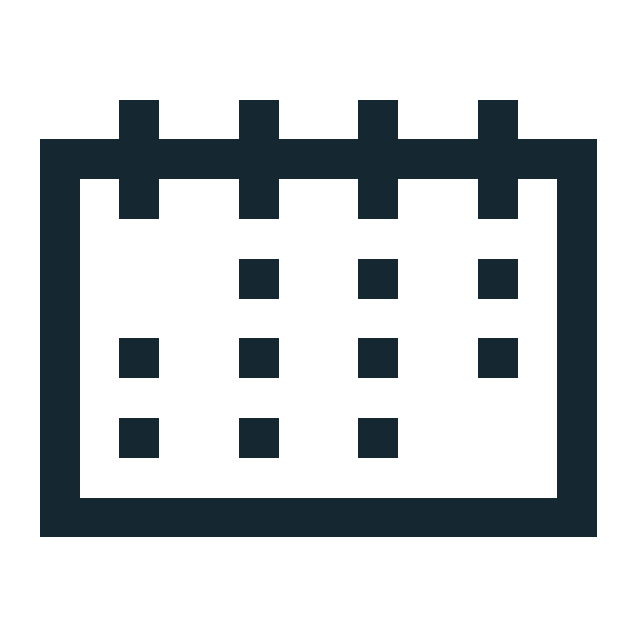

¿Qué es ClinicApp?
Historial Moderno

Agenda Inteligente
Interfaz Intuitiva
Registro de Tratamientos
Usabilidad
ClinicApp es una herramienta digital diseñada para optimizar la administración de una clínica dental, centralizando el registro de pacientes, la agenda de citas y los historiales clínicos, además de automatizar recordatorios y mejorar la comunicación con los pacientes.